10 септември 2026 — 16 графики с нови данни от 2026-09-04 насам.
1. Инфлация — Потребителски цени (ХИПЦ) — ускорение до 5,1% г/г през август, от 4,4% през юли.
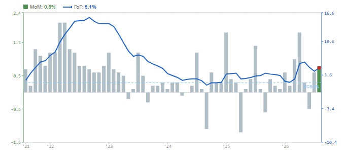
Евростат · prc_hicp_midx
2. Приноси към инфлацията — ускорение до 5,1% г/г през август, от 4,4% през юли.
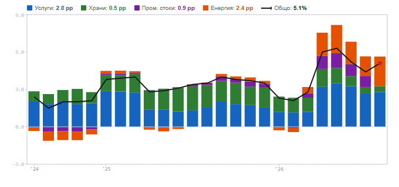
Евростат · prc_hicp_midx · BG 2025 weights
3. Цени на производител — общ индекс — забавяне до 10,3% г/г през юли, от 13,9% през юни.
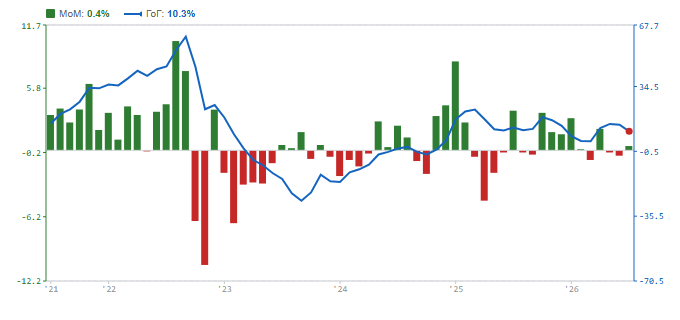
Евростат · sts_inpp_m · total industry (B–D)
4. Цени на производител — вътрешен и международен пазар — понижение до 6,9% през юли, от 13,0% през юни.
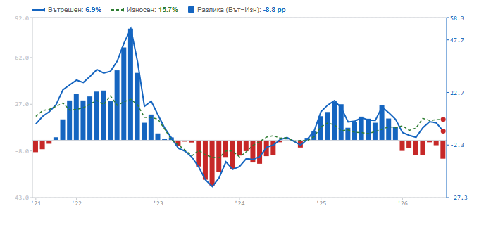
Евростат · sts_inpp_m · total industry (B–D)
5. Индекс на промишленото производство — по-дълбок спад, −6,8% г/г през юли, от −2,6% през юни.
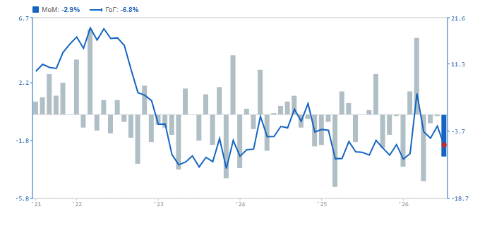
Евростат (sts_inpr_m)
6. Промишлено производство — спад до 86,2 през юли, от 88,8 през юни.
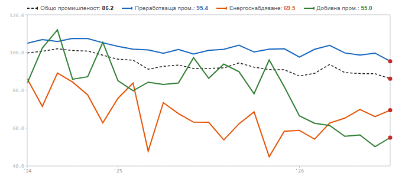
Евростат · sts_inpr_m · calendar-adjusted index, 2021=100
7. Търговия на дребно — забавяне до 6,4% г/г през юли, от 6,9% през юни.
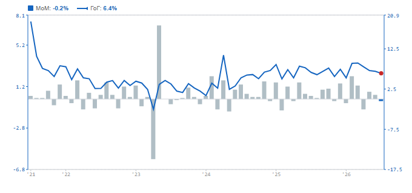
Евростат (sts_trtu_m)
8. Износ (стоки) — ръст до 4 165 млн. евро през юни, от 3 718 млн. евро през май.
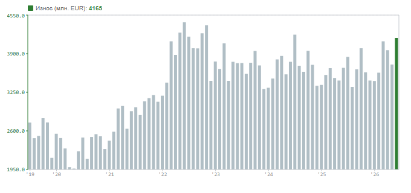
BNB / NSI
9. Внос (стоки) — ръст до 5 176 млн. евро през юни, от 4 676 млн. евро през май.
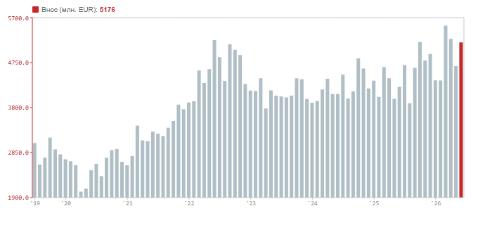
BNB / NSI
10. Търговски баланс — разширяване на дефицита до 1 011 млн. евро през юни, от 958 млн. евро през май.
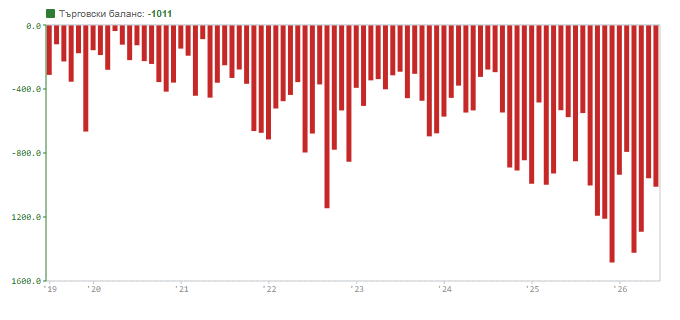
BNB / NSI
11. Безработица — България и ЕС-27 — покачване до 3,6% през юли, от 3,5% през юни.
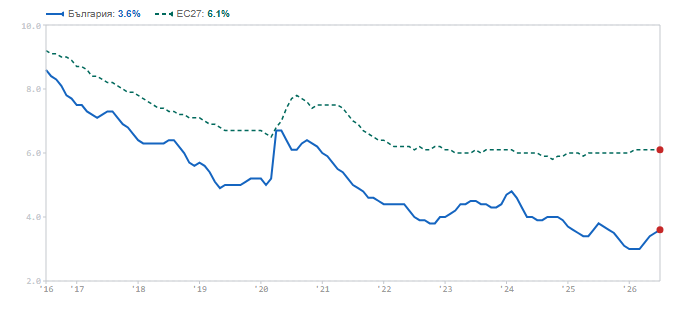
Евростат (une_rt_m)
12. Новорегистрирани безработни — ръст до 23,4 хил. през юли, от 21,3 хил. през юни.
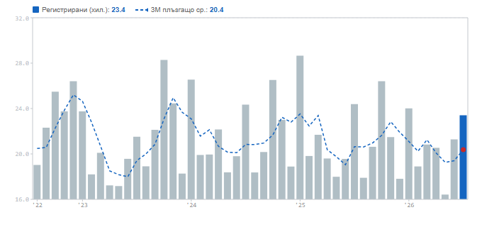
AZ (Българияn Employment Agency)
13. Ръст на средната брутна заплата — ускорение до 9,1% г/г през юни, от 8,6% през май.
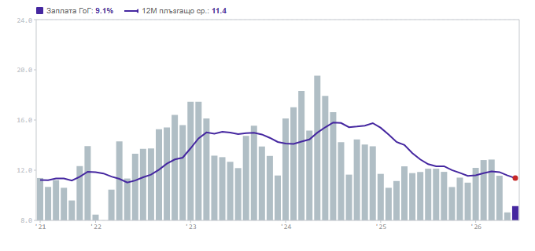
NSI
14. Икономически настроения (ИИН) — подобрение до 96,8 през август, от 94,7 през юли.
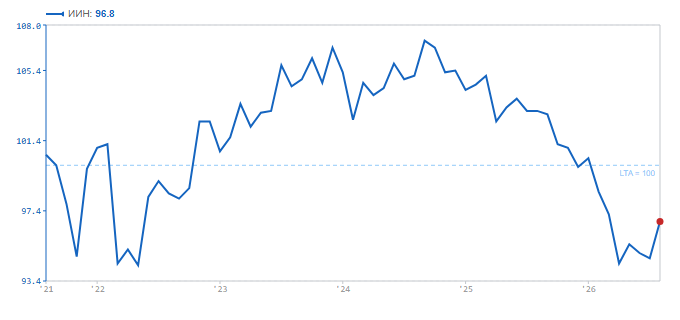
Евростат (ei_bssi_m_r2)
15. Доверие на потребителите — подобрение до −25,3 през август, от −25,9 през юли.
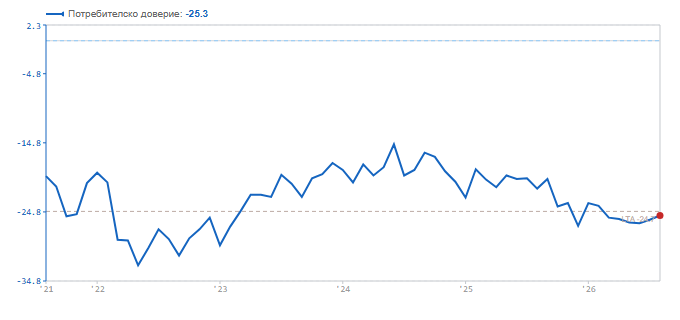
Евростат (ei_bsco_m)
16. Микс ел. производство — ръст до 1 000 ГВт·ч през юни, от 857 ГВт·ч през май.
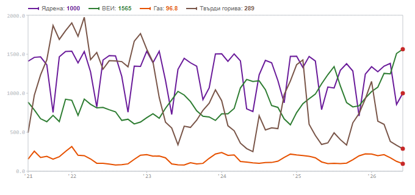
Евростат (nrg_cb_pem)